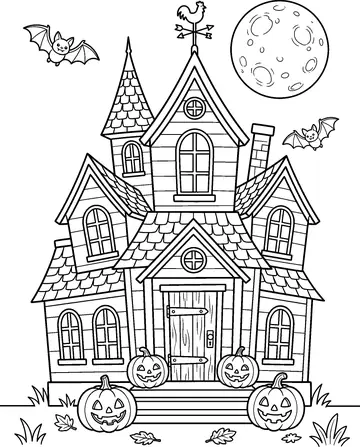
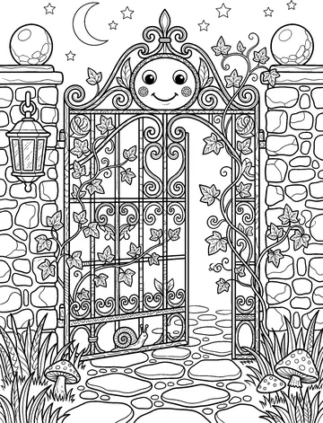
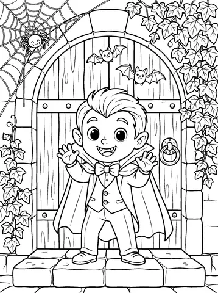
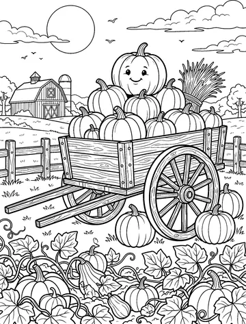
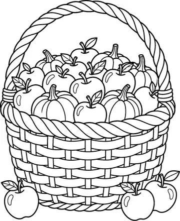
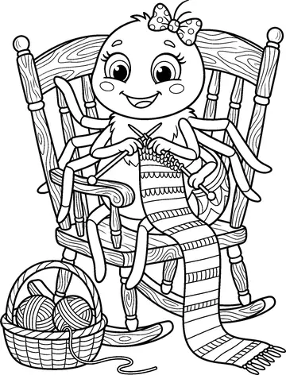
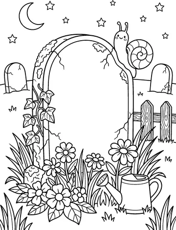
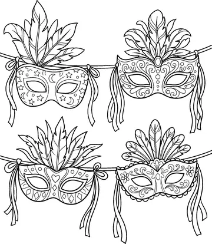
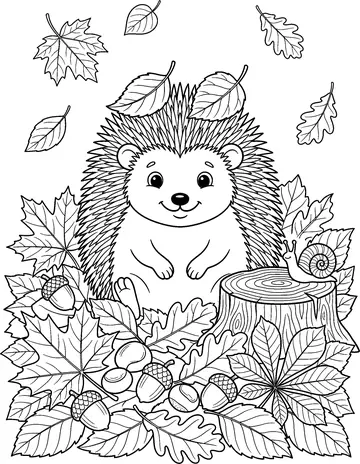
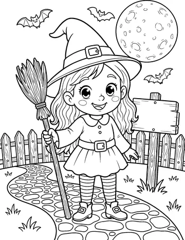

Trzy zabawy z potworkami z Twojej kolorowanki. Wybierz jedną.
Patrz uważnie: potworki wychylają się na chwilę zza kryjówek. Kliknij ten, który właśnie wyjrzał.
Dotknij ekranu albo naciśnij spację, żeby podskoczyć.
Te 10 nie zmieściło się w książce. Są trudniejsze niż strony w środku, mają więcej drobnych pól do wypełnienia. Jeden plik PDF, format A4, do wydrukowania w domu.

Nawiedzony dom
Kuta brama
Wampirek
Wóz z dyniami
Kosz z dyniami
Pajączek
Stary nagrobek
Maski karnawałowe
Jeż w liściach
Mała czarownicaPostęp i najlepszy wynik zapisują się tylko w tej przeglądarce. Nie wysyłamy nigdzie żadnych danych.